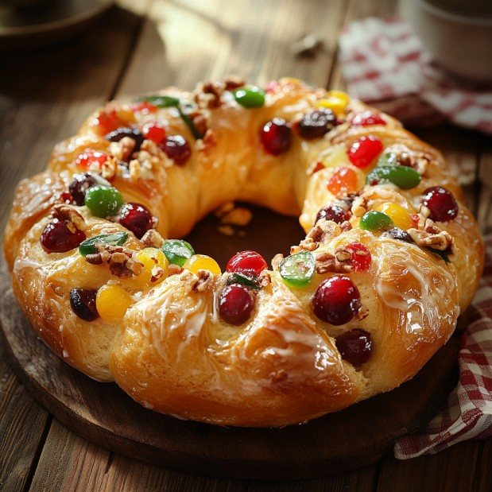

Doces · Tortas e bolos
Rosca de Natal

Ingredientes
- 1 caixa (400 g) de mistura para salgados
- ⅓ xícara de leite
- 3 ovos
- ¼ xícara de manteiga
- ½ xícara de açúcar cristal
- ¼ xícara de leite (recheio)
- ¼ xícara de mel
- 1 colher (chá) de canela em pó
- 1 ½ xícara de nozes picadas
- 2 colheres (chá) de suco de limão
- 2 xícaras de passas brancas inteiras e frutas cristalizadas picadas deixadas de molho em ⅔ xícara de licor Cointreau
- 1 gema batida
Modo de preparo
- Numa tigela, coloque a mistura para salgados, ⅓ xícara de leite e 2 ovos. Misture bem com as mãos e reserve.
- Prepare o recheio: numa panela, derreta a manteiga e junte o açúcar cristal, ¼ xícara de leite, o mel e a canela. Misture e espere ferver.
- Junte as nozes, mexa bem, retire do fogo e deixe amornar. Junte o terceiro ovo, já batido, e o suco de limão. Misture bem e reserve.
- Numa superfície enfarinhada, abra a massa com um rolo até obter um retângulo de 37 x 54 cm. Espalhe o recheio sobre a superfície da massa. Escorra as passas e as frutas cristalizadas e distribua pela superfície do recheio.
- Enrole a massa pelo lado mais comprido, como se fosse rocambole, e pincele a superfície com a gema.
- Coloque numa assadeira untada com manteiga. Umedeça as pontas da rosca com água, junte-as e grude uma na outra. Corte a rosca em fatias iguais até dois dedos abaixo do centro.
- Afaste as fatias, inclinando ligeiramente cada uma. Unte um pedaço de papel-alumínio, cubra a rosca e deixe crescer durante 20 minutos.
- Preaqueça o forno em temperatura média (200 °C). Retire o papel-alumínio e leve a rosca ao forno para assar por 15 minutos. Diminua a temperatura para 180 °C e asse por mais 10 minutos ou até dourar. Deixe esfriar sobre uma grade e congele.
Observação
As massas de pão, quando cruas, não devem ser recongeladas; se você tiver que recongelar a massa, asse-a e depois congele como ensinado nas receitas. Congelamento: cubra a rosca com plástico e leve ao freezer até congelar; passe-a para um saco plástico, retire o ar e vede bem; etiquete e congele. Descongelamento: em temperatura ambiente por 2 horas. Prepare um glacê misturando 1 xícara de açúcar de confeiteiro e 1 ½ colher (sopa) de suco de limão até obter um creme espesso e escorregadio; derrame sobre a rosca e decore com frutas cristalizadas.